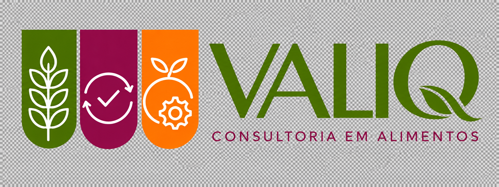

Leitura da operação
Análise técnica de rotinas, fluxos, riscos e prioridades para definir um plano de trabalho possível.

Voltar ao siteAtuação voltada a restaurantes, buffets, cozinhas industriais, padarias, escolas e outros serviços de alimentação que precisam organizar processos, pessoas e documentos.
Cada projeto começa com a leitura da operação e avança nas entregas que fazem sentido para o seu momento.
Análise técnica de rotinas, fluxos, riscos e prioridades para definir um plano de trabalho possível.
Desenvolvimento ou atualização do Manual de Boas Práticas, procedimentos e registros alinhados ao funcionamento do estabelecimento.
Orientação para transformar diretrizes em práticas de trabalho, responsabilidades e controles do dia a dia.